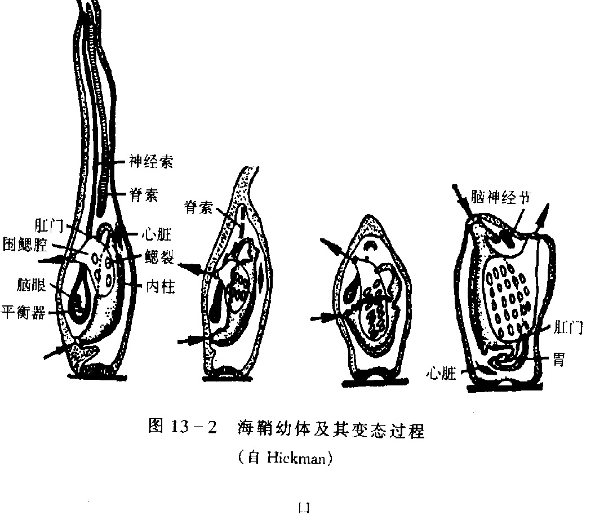

二、尾索动物亚门（以海鞘为例）
尾索动物亚门包括尾海鞘、海鞘、柄海鞘等约2000种海生动物。多数种类幼体自由生活、成体营固着生活，少数种类成体自由游泳或漂浮。个体长从几毫米至30 cm不等。
幼体具脊索动物的三大主要特征，但脊索仅限于尾部；幼体经变态发育为成体后，只保留鳃裂。
体外包被特殊的被囊，由近似植物纤维素的被囊素（tunicin）所构成，因此尾索动物又称被囊动物（Tunicata）。
（一）海鞘的结构与生理
1. 体壁与被囊
海鞘无骨骼，体表是被囊。被囊内是一层外套膜，顶部开口为入水管孔，其侧面另有一出水管孔。
外套膜由表皮及里依次是：单层上皮、结缔组织和肌肉纤维。
- 上皮组织来源于外胚层；
- 结缔组织和肌肉纤维来源于中胚层。
外套膜的分泌物质构成身体的被囊。在整个动物界中，被囊仅见于尾索动物和少数原生动物。
2. 消化道与呼吸器官
消化道开口于入水管口，依次为：入水管口 → 咽 → 食道 → 胃 → 肠 → 肛门 → 围鳃腔 → 出水管口。
呼吸器官是咽壁形成的许多鳃裂，咽内壁有丰富的毛细血管，故咽兼具摄食、呼吸双重功能。
摄食、排泄与呼吸的水流路线：
- 水（含食物、O₂）→ 入水管口 → 咽（消化、吸收；气体交换）→ 食道 → 胃 → 肠 → 肛门 → 围鳃腔 → 出水管口；
- 气体交换在咽壁鳃裂处完成，O₂ 进入咽壁毛细血管。
3. 开管式循环
由心脏和血管组成，血管无动、静脉之分。血液在血管内有周期性地改变方向流动，血液无色。
这种开管式、血流周期改向的循环方式是脊索动物中独有的（其他脊索动物多为闭管式且血流单向）。
4. 排泄器官
海鞘无集中的排泄器官，仅在肠的弯曲处有一团具排泄机能的细胞（称肠上腺/排泄腔），代谢废物多储存于其中。
5. 神经系统与感觉器官
由于海鞘营固着生活，神经系统和感觉器官都很退化，中枢神经系统只剩一个实心的神经节（位于入、出水管孔之间）。
（二）生殖
海鞘营有性生殖和出芽生殖，甚至存在世代交替。
雌雄同体，但异体且体外受精（避免自体受精）。
（三）幼体与逆行变态（核心考点）
受精卵在海水中发育为幼体，经几小时的自由生活后，找到适合物体并附着其上，便开始营固着生活和变态。
幼体具有脊索动物的三大特征（脊索仅限尾部、背神经管、咽鳃裂）。变态后：
- 脊索和尾消失；
- 背神经管退化为一个神经节；
- 只保留咽鳃裂；
- 由体壁分泌被囊素形成被囊。
像这种从幼体到成体结构更为简化（退化）的变态，称为逆行变态（退化变态）。
| 特征 | 海鞘幼体 | 海鞘成体 | 变化趋势 |
|---|---|---|---|
| 脊索 | 有（仅限尾部） | 消失 | 退化 |
| 背神经管 | 有（中空） | 退化为实心神经节 | 退化 |
| 咽鳃裂 | 有 | 保留并发达 | 保留/加强 |
| 尾 | 有 | 消失 | 退化 |
| 被囊 | 无（或薄） | 发达（被囊素） | 新生 |
| 生活方式 | 自由游泳 | 固着生活 | 转变 |
（四）尾索动物的进化意义
尾索动物虽成体高度特化（固着、被囊、器官退化），但其幼体具完整三大特征，证明它们属于脊索动物门。
逆行变态提示：尾索动物可能由自由生活的原始脊索动物演化而来，固着生活是次生特化。它们与头索动物、脊椎动物共同构成脊索动物门，但在演化主线上属于侧支。

本节小结
1. 尾索动物约2000种，海生，幼体自由、成体多固着，体外被囊（被囊素≈纤维素），又称被囊动物。
2. 幼体具三大特征，但脊索仅限尾部；成体只保留鳃裂。
3. 海鞘结构要点：两孔（入水/出水管孔）、被囊+外套膜、咽兼具消化呼吸、围鳃腔。
4. 循环：开管式、血流周期改向——脊索动物中独有。
5. 神经：成体退化为实心神经节；排泄无集中器官。
6. 生殖：雌雄同体、异体体外受精，可有性+出芽+世代交替。
7. 逆行变态（退化变态）：幼体→成体结构简化，是本节核心考点。